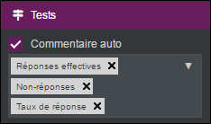
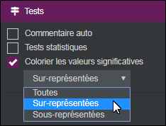
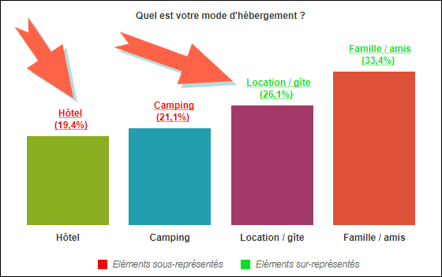

Tests statistiques
Il est recommandé de réaliser des tests statistiques afin de savoir si la relation entre les variables est significative et pouvoir en tirer des conclusions fiables. Les tests statistiques dépendent du type de variable étudié. Pour afficher les tests statistiques, procédez comme suit :
-
Accédez à l’onglet avancé, catégorie Tests.
-
Sélectionnez tests statistiques.
Les tests statistiques disponibles :
Test du Chi-Deux, test de Fisher, coefficient de corrélation
| Type des variables à croiser | Traitement à mettre en œuvre | Test statistique validant la relation |
| Nominale/Nominale | Tri croisé | Test du Chi-deux |
| Nominale/Numérique | Analyse de variance | Test de Fisher |
| Numérique/Numérique | Régression | Coefficient de corrélation |
-
Une variable est dite nominale ou fermée si elle ne prend qu'un nombre limité de valeurs, appelées modalités.
EXEMPLE : Le sexe (Homme, Femme), la catégorie socio-professionnelle (CSP), le mode de transport (TGV, TER, Corail...), etc.
-
Une variable est dite numérique si elle peut prendre comme valeur n'importe quel nombre.
EXEMPLE : L'âge, le salaire, le nombre de voyages, etc.).
-
Une variable est dite échelle lorsque le répondant se positionne sur une échelle de mesure (Les questions échelles peuvent aussi être traitées comme des questions numériques).
EXEMPLE : Une échelle de satisfaction : "Pas du tout satisfait" jusqu'à "tout à fait satisfait".
Le test du Chi-deux repose sur une comparaison entre les effectifs réels (ceux qu'on observe dans l'enquête) et les effectifs théoriques (ceux que l'on aurait obtenus s'il n'y avait aucune relation entre les deux variables). À travers ce test on examine s'il y a une sur-représentation (ou sous-représentation) de certains couples de modalités de réponses.
EXEMPLE : Dans le cadre de l'enquête "Train Express" on souhaite savoir si les attentes d'amélioration (prix, horaires, qualité, etc...) varient, avec le type de transport utilisé (TGV, TER, Corail...).
Le test consiste à calculer la somme des carrés des écarts entre les effectifs réels et effectifs théoriques. Plus l'écart est grand, plus le Chi-deux est élevé, et plus la relation entre les deux variables est forte. Inversement, plus l'écart est faible, plus le lien entre les deux variables est faible.
Le test de Fisher et l'analyse de variance :
L'objectif de l'analyse de variance est d'établir si, au regard des valeurs de la variable numérique, les groupes d'individus correspondant aux modalités de la variable nominale sont significativement différents les uns des autres.
EXEMPLE : Dans le cadre de l'enquête "Train Express", on souhaite savoir si la possession d'un abonnement (Oui, Non) ou le motif des voyages (voyage pro, voyage perso) influencent le nombre de voyages mensuel.
Cette analyse met en œuvre les principes suivants :
Pour chaque modalité de la variable nominale, la moyenne de la variable numérique dissimule une dispersion autour de cette moyenne. La variance (le carré de l'écart-type) mesure cette dispersion appelée variance intra-groupes.
D'une modalité à l'autre, la moyenne varie et révèle une autre différence, plus ou moins grande, mesurée par un autre calcul de variance : variance entre modalités ou inter-groupes.
La corrélation et la régression linéaire simple :
On cherche à savoir si une variable Y varie en fonction d'une autre variable X. La technique mise en œuvre permet d'obtenir un nuage de points et une droite de régression des deux variables.
EXEMPLE : Dans le cadre de l'enquête "Train Express", on souhaite savoir si le salaire mensuel du client conditionne le nombre de voyages effectués par mois.
Le coefficient de corrélation r indique la force et le sens de cette éventuelle relation.
Le coefficient de corrélation r est compris entre -1 et +1. Si r est :
-
Proche de +1, la corrélation est très forte, et les deux variables varient dans le même sens. Quand X augmente, Y augmente ;
-
Proche de -1, la corrélation est très forte, et les variables varient dans un sens inverse ;
-
Proche de 0, la corrélation est nulle, il n'y a aucun lien entre les deux variables.
La représentation graphique de cette éventuelle relation passe par une droite de régression linéaire ayant pour équation y=a x+b.
Le commentaire auto permet d’afficher un certain nombre d’informations à propos d’une analyse à plat. Pour afficher un commentaire auto, procédez comme suit :
-
Dans l’onglet Avancé, catégorie Tests, cochez la case Commentaire auto.
-
Sélectionnez les commentaires que vous souhaitez afficher depuis le menu déroulant prévu à cet effet (réponses effectives, non-réponses, taux de réponse, etc...).


Colorier les valeurs significatives permet de mettre en évidence les valeurs significatives dans votre analyse. Pour ce faire, procédez comme suit :
-
Dans l’onglet avancé, catégorie tests, sélectionnez colorier les valeurs significatives.
-
Choisissez les éléments à colorier depuis le menu déroulant prévu à cet effet : les Sur-représentés ou les Sous-représentés (par défaut les deux sont coloriés).

-
(Facultatif) Vous pouvez personnaliser les couleurs des valeurs significatives, pour ce faire :
-
Sélectionnez votre analyse.
-
Cliquez sur le bouton Analyse, depuis la partie Style.
-
Définissez les couleurs à utiliser.
-


EXEMPLE : Les éléments surreprésentés sont désormais coloriés en vert, les éléments sous-représentés en rouge. 

REMARQUE : Il est possible d’afficher ce à quoi ces zones renvoient en affichant la légende.